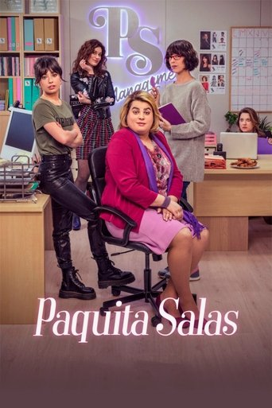
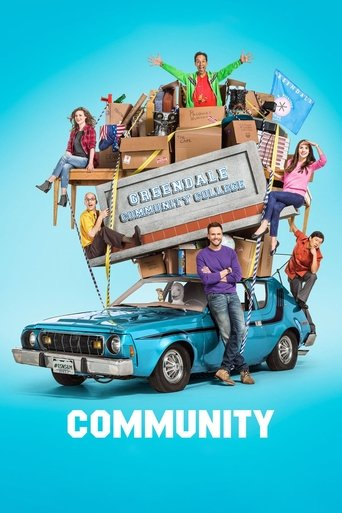
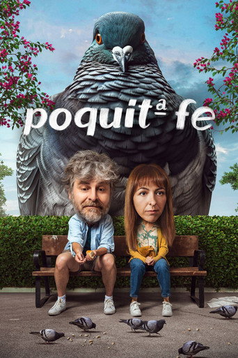
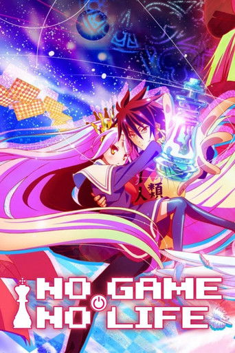

Nada por aquí. Prueba con otra palabra.Nothing here. Try another word.
EspectadorSpectator
Mi obra completa es el camino de ida: lo que hago y le mando al mundo.
Esta página es el de vuelta: lo que el mundo me manda a mí y se queda. Películas, poetas, palabras, libros, personas, momentos del día.
Listas por orden de preferencia, que pueden cambiar.
My obra completa is the way out: what I make and send to the world.
This page is the way back in: what the world sends to me and stays. Films, poets, words, books, people, times of day.
Lists in order of preference, which may change.
I · Pantalla y papelScreen and page
Películas favoritasFavourite films
1
OrigenInception
Christopher Nolan · 2010
2
VértigoVertigo
Alfred Hitchcock · 1958
3
Pulp Fiction
Quentin Tarantino · 1994
Series favoritasFavourite series
1

Paquita Salas
Los Javis · 2016–2019 · 3 temporadasseasons
Falso documental sobre una representante de actores de Navarrete que se quedó en los noventa.A mockumentary about an actors' agent from Navarrete who got stuck in the nineties.
2

Community
Dan Harmon · 2009–2015 · 6 temporadasseasons, 110 episodiosepisodes
Un grupo de estudio muy raro en Greendale, un community college de Colorado.A very odd study group at Greendale, a community college in Colorado.
3
The Office
2005–2013 · la americanaUS version
4

Poquita fe
desde 2023since 2023
5

No Game No Life
anime · 2014
Libros favoritosFavourite booksprovisional
Toca un libro para leer un extracto.Tap a book to read an excerpt.
Canciones que fueron mis favoritasSongs that were once my favourite
En algún momento de mi vida, cada una de estas fue la canción: la del mes, o la de una semana que me obsesionaba. Toca una para escucharla.At some point in my life, each of these was the song: the song of the month, or of a week I was obsessed with it. Tap one to listen.
Artistas favoritosFavourite artists
Mis canciones de cada uno, en orden. Toca una para escucharla.My songs by each of them, in order. Tap one to listen.
A la derecha, una posible traducción al inglés. Tiene que ser una sola palabra.Spanish words, with a possible English translation on the right. One word each.
sabesyou know
esothat's it / exactly
litlit
Refranes favoritosFavourite sayings
A buen entendedor,A word to the wise,
Estrofas favoritasFavourite stanzas
Cada punto es un verso; mismo color, misma rima. En minúscula, arte menor.Each dot is a line; same colour, same rhyme. Lowercase means short lines.
Justo antes de comerRight before lunchright before lunchjusto antes de comer
Justo antes de cenarRight before dinnerright before dinnerjusto antes de cenar
Siluetas de país favoritasFavourite country silhouettes
1
República Democrática del CongoDemocratic Republic of the Congo
2
CroaciaCroatia
3
Chile
V · PersonasPeople
Ídolos de 2026Idols of 2026
Marcos, amigo gallego del SigfreGalician friend of Sigfre's
Miguel, ¿quién?who?
El teatroThe theatre, personificado en Etienne, Miguel y Karlapersonified by Etienne, Miguel and Karla
Jimbo
Alba
Créditos de las imágenesImage credits
Carteles de Origen, Vértigo y Pulp Fiction: Wikipedia / Wikimedia.Posters of Inception, Vertigo and Pulp Fiction: Wikipedia / Wikimedia.
Carteles de las series: The Movie Database (TMDB).Series posters: The Movie Database (TMDB).
Portadas de los libros: Open Library.Book covers: Open Library.
Retratos de Miguel Hernández, Sylvia Plath y Pío Baroja: Wikimedia Commons.Portraits of Miguel Hernández, Sylvia Plath and Pío Baroja: Wikimedia Commons.
Foto de Blas de Otero: Manuel María Fernández Gochi, CC BY-SA 4.0, recortada.Blas de Otero photo: Manuel María Fernández Gochi, CC BY-SA 4.0, cropped.
Fotos de artistas, carátulas y reproductores: Spotify.Artist photos, cover art and players: Spotify.
Los poemas de Blas de Otero y Sylvia Plath y los extractos de libros pertenecen a sus autores y editoriales; se citan como fragmentos. El soneto de Miguel Hernández es de dominio público.The poems by Blas de Otero and Sylvia Plath and the book excerpts belong to their authors and publishers; they are quoted as fragments. Miguel Hernández's sonnet is in the public domain.